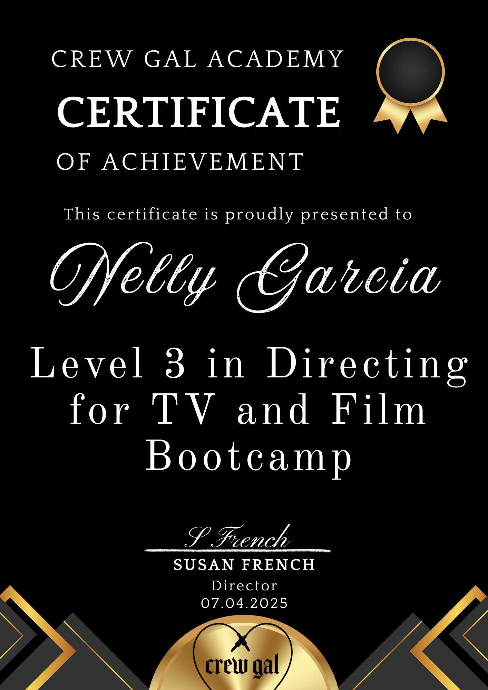

Software I have designed and built — from VST plugins and standalone apps to open-source teaching tools and research datasets. Built at the intersection of signal processing, machine learning and sound design.
Audio plugins and standalone applications built in JUCE and C++, developed for research and commercial use.
Open-source materials developed for the Audio Plugin Development module at Queen Mary University of London.
Publicly available datasets produced as part of my PhD research at the Centre for Digital Music, QMUL.